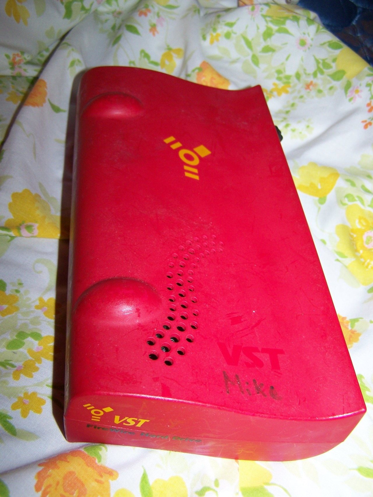
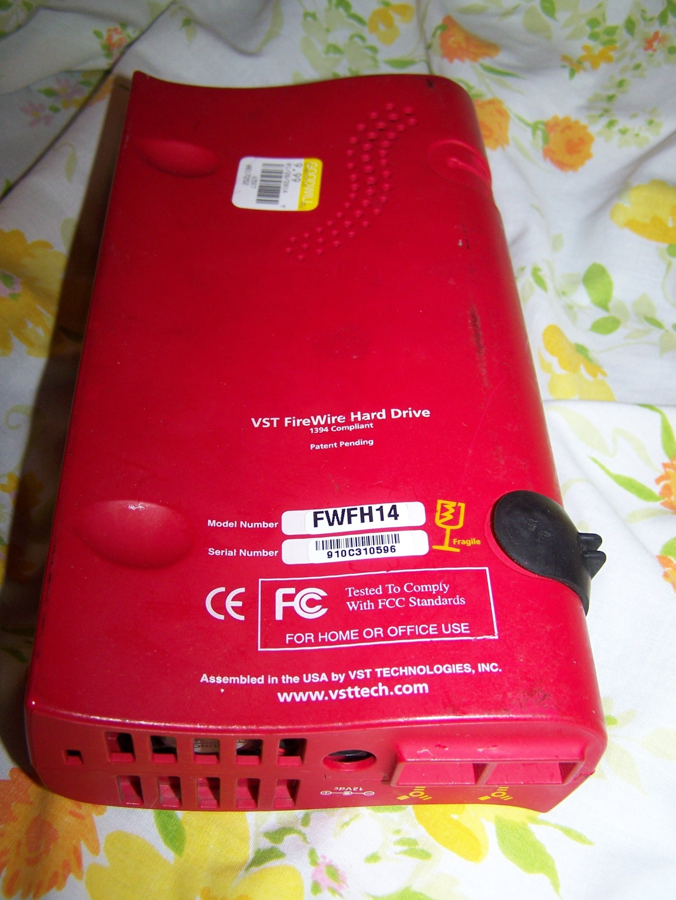

VST FireWire 14gb external hard drive, 1999
While 14 gigabytes doesn’t sound like much today, remember that when this was produced and Windows 98 roamed the earth, the average hard drive was between 1.2gb and 6gb. And it’s (400 mbps) FireWire so it could be used with newer Macintoshes.Unfortunately the clown swapped the 14gb drive in it out for a 4gb Windows 98 boot drive (partition table deleted but files not wiped), thus I now have a FireWire enclosure and a spare temporary storage drive.